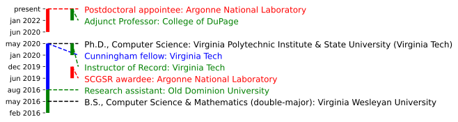

Tyler H. Chang
Argonne National Laboratory,
Mathematics & Computer Science (MCS) Division
About Me:
I am currently a Postdoc at Argonne National Laboratory in the Mathematics and Computer Science Division. I received my Ph.D. in Computer Science from Virginia Tech in 2020, where my dissertation was "Mathematical Software for Multiobjective Optimization Problems."
I develop frameworks and algorithms at the intersection of optimization, approximation theory, and machine learning. I apply these tools on scientific applications such as material manufacturing, aerospace engineering, and HPC tuning. My active areas of research are
- numerical optimization
- machine learning
- computational geometry
- analysis of algorithms
- scientific software
I am particularly passionate about open-source software. Check out some of my software contributions below or visit my GitHub, and don't hesitate to reach out if you have questions, comments, or feedback!

Research and Publications:
Research Statement
I am interested in solving scientific problems by combining techniques from blackbox optimization, approximation theory, and machine learning techniques.
Owing to decades of research and careful analysis, many techniques in blackbox optimization and approximation theory are easy to interpret and verify. These properties are important in many scientific settings such as mission-critical deployments and exploratory research. However, some of these techniques are not scalable or flexible enough for usage in modern applications, which can be high-dimensional, overparameterized, and may involve complex design or action spaces. On the other hand, modern machine learning has been extremely successful in scaling to large complex problems by using computationally cheap heuristics for extracting structure from large volumes of high-dimensional data.
The goals of my research are to:
- design flexible and scalable algorithms for leveraging blackbox optimization and numerical approximation techniques in modern settings;
- create hybrid machine learning/numerical algorithms, techniques, and frameworks to exploit structure in complex, overparameterized problems;
- improve our understanding of the behavior of classical numerical methods in complex, high-dimensional domains; and
- make these hybrid techniques accessible to the general public through the production of high-quality scientific software.
Some examples of my past and ongoing work include:
- multiobjective optimization of computationally expensive simulations and experiments,
- multivariate interpolation of high-dimensional scientific and engineering data,
- designing fast and scalable algorithms for computing subsets of the Delaunay triangulation in high-dimensional spaces, and
- implementation of portable and maintainable open-source scientific software packages.
Representative Publications
T. H. Chang and S. M. Wild. ParMOO: a Python library for parallel multiobjective simulation optimization. Submitted to Journal of Open Source Software, May 2022. JOSS Open Review: here.
View bib entry
2022. T. H. Chang, L. T. Watson, J. Larson, N. Neveu, W. I. Thacker, S. Deshpande, and T. C. H. Lux. Algorithm 1028: VTMOP: Solver for blackbox multiobjective optimization problems. ACM Transactions on Mathematical Software 48(3), Article 36, 34 pages. doi: 10.1145/3529258
View bib entry
2020. T. H. Chang, J. Larson, and L. T. Watson. Multiobjective optimization of the variability of the high-performance Linpack solver. In Proc. 2020 Winter Simulation Conference (WSC 2020), pp. 3081--3092. doi: 10.1109/WSC48552.2020.9383875
View bib entry
2020. T. H. Chang, L. T. Watson, T. C. H. Lux, A. R. Butt, K. W. Cameron, and Y. Hong. Algorithm 1012: DELAUNAYSPARSE: Interpolation via a sparse subset of the Delaunay triangulation in medium to high dimensions. ACM Transactions on Mathematical Software 46(4), Article 38, 20 pages. doi: 10.1145/3422818
View bib entry
2018. T. H. Chang, L. T. Watson, T. C. H. Lux, B. Li, L. Xu, A. R. Butt, K. W. Cameron, and Y. Hong. A polynomial time algorithm for multivariate interpolation in arbitrary dimension via the Delaunay triangulation. In Proc. 2018 ACM Southeast Conference (ACMSE '18), Article 12, 8 pages. doi: 10.1145/3190645.3190680
View bib entry
All Papers and Reports
Publicly Available Software:
2022. ParMOO: Python library for parallel multiobjective simulation optimization. Release: 0.1.0
Devs: T. H. Chang (lead), S. M. Wild, and H. Dickinson. Primary Prog. Lang: Python 3
2022. VTMOP: Solver for blackbox multiobjective optimization problems.
Devs: T. H. Chang (sole). Primary Prog. Lang: Fortran 2008
2020. DelaunaySparse: Interpolation via a sparse subset of the Delaunay triangulation.
Devs: T. H. Chang (lead) and T. C. H. Lux. Primary Prog. Lang: Fortran 2003
2019. QAML: Quantum annealing math library.
Devs: T. C. H. Lux, T. H. Chang, and S. S. Tipirneni. Primary Prog. Lang: Python 3
Funding:
Current
FY 2022. Money for my mixtape.
Role: co-PI. With: O. Guy.
Lil Wayne: Lil Cash Money in 2022.
Type: Unrestriced gift. Budget: $20. Length: 6 months.
Pending
FY 1999. My Big Expensive Institution.
Role: investigator. Director: A. Guy. ANL Lead: B. Guy.
DOE ASCR: Big Cash Money in 1999 (DE-FOA-999999).
Type: full proposal (20 pages + appendices). Budget: $99.9M. Length: 5 years.
Professional Services and Awards:
Minisymposia Organized
- SIAM Conference on Optimization (2021)
- SIAM Conference on Computational Science and Engineering (2021)
Journal Referee
- ACM Transactions on Mathematical Software (2021--Present)
- The Visual Computer Journal (2021)
- Quantum Information Processing (2021)
- MDPI: Mathematical and Computer Applications (2021)
- Journal of Machine Learning Research (2019)
Conference Reviewer
- Int. Conf. for High Performance Computing, Networking, Storage, and Analysis 2021 (SC 21)
- IEEE SoutheastCon 2020
- IEEE SoutheastCon 2019
- IEEE SoutheastCon 2018
Institutional Services
- Nov 2022 - Present. Organizing Committee: FASTMath Institute Seminar Series
- Nov 2022. Technical Reviewer: Sustainable Research Pathways
- Aug 2017 - May 2020. Founding Member: Virginia Tech, Computer Science Graduate Counsel
- Mar 2019. Primary Student Organizer: Virginia Tech, Comp. Sci. Graduate Preview Weekend
Awards
- 2021. Nominee for Outstanding Dissertation Award: Virginia Tech, Graduate School
- 2019. Davenport Leadership Fellowship: Virginia Tech, College of Engineering
- 2018. SCGSR Award: DOE Office of Science, Graduate Student Research (SCGSR) Program
- 2018. Pratt Fellowship: Virginia Tech, College of Engineering
- 2017. Pratt Fellowship: Virginia Tech, College of Engineering
- 2016. Cunningham Doctoral Fellowship: Virginia Tech, Graduate School
- 2016. Davenport Leadership Fellowship: Virginia Tech, College of Engineering
- 2016. Outstanding Student in Computer Science & Mathematics: Virginia Wesleyan University
Professional Membership
- ACM (2015--Present)
- SIAM (2016--Present)
- MOS (2022--Present)
Teaching and Mentoring Students:
Courses Taught
- Jan 2022 - Present. Adjunct Professor: College of DuPage, Dept. of Computer and Information Science
- CIS 2531: Introduction to Python Programming
- Jan 2020 - May 2020. Instructor of Record: Virginia Tech, Dept. of Computer Science
- CS 3114: Data Structures and Algorithms (in Java)
Students Advised
Jun 2021 - Aug 2021. Student Name2 (Some University2), summer student via Other DOE Internship program
- Project: YouTubing stuff
Jun 2020 - Aug 2020. Student Name1 (Some University1), summer student via Argonne Internship program
- Project: googling stuff
Mentoring
Jun 2020. Mentee Name (Some University), friend via Argonne friendship program
Misc Links:
Lecture Notes
Organizations I am/have been part of
- Argonne LANS
- Argonne MCS
- FASTMath 5 Institute
- Layne Watson's Lab
- The VarSys Project
- Virginia Tech, DAC
- Virginia Tech, Dept. of CS
Resources for Computational Scientists
- LANS Seminars
- Better Scientific Software Website
- JOSS Checklist for Scientific Software
- JOSS Home (w/ list of recently published JOSS SW)
- Fortran numerical package index
- Fortran compiler support
- Guide to Available Math Software
- tmux cheatsheet
- reference card of plain TeX commands
- automatically wrap modern Fortran in Python
- numpy user guide
- Fortran 2008 ISO docs
- LAPACK user guide
- OpenMP 4.5 stds doc
- MPI 4.0 stds doc
- CUDA Fortran programmer's guide
My Sister is a Pro Tennis Player!
My Grandfather was a Geophysicist